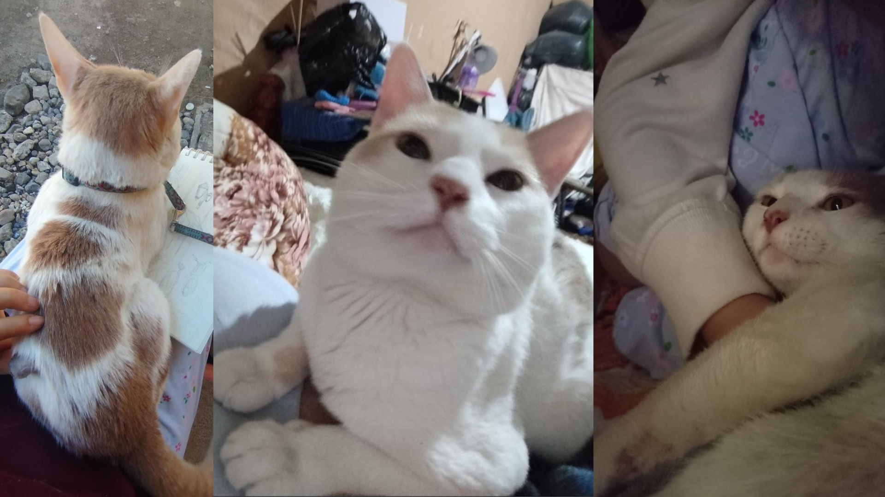
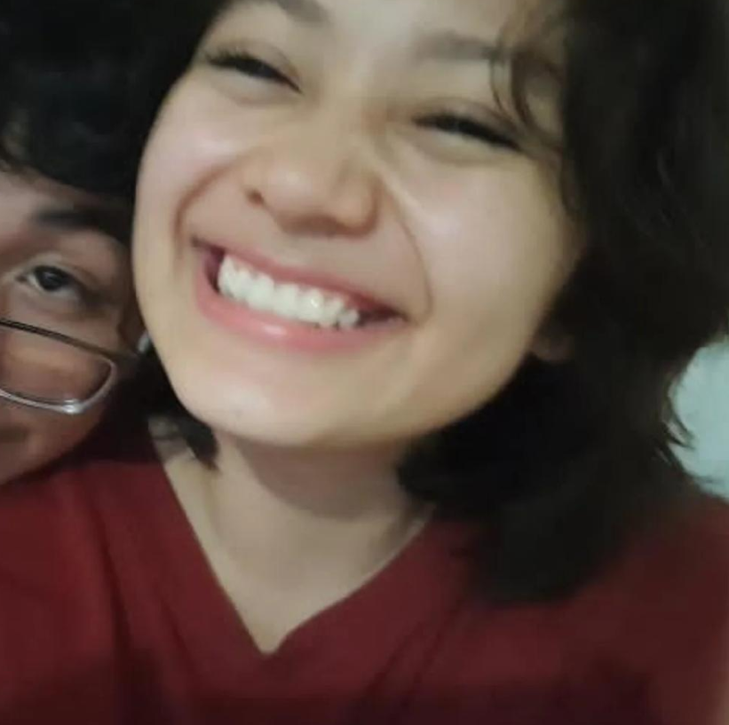
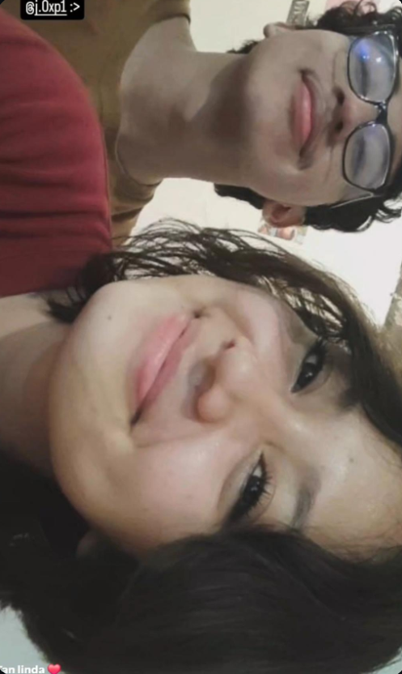
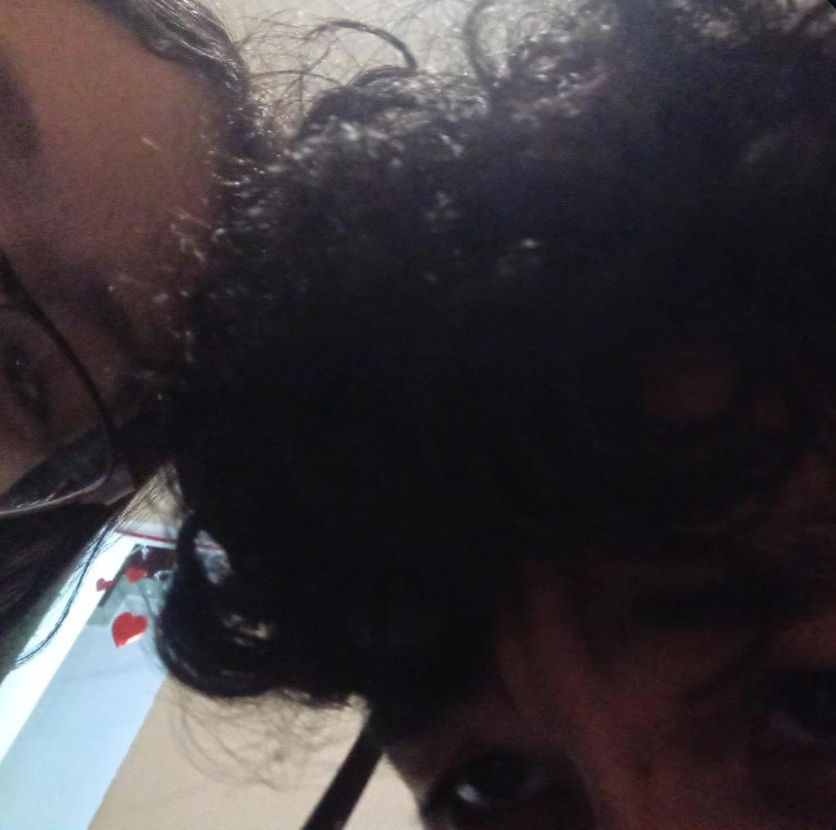

RECUERDOS DE MI VIDA 📸

Frappe 🐱
Yo se que Frappe era una Parte Muy importante de ti se que aun lo sigues queriendo a pesar de no poder abrazarlo o agarrarlo como lo agarrabas se que eso te lastima y creeme que te comprendo :C , es Dificil ya que el Marco un Antes y un despues El te acompaño en todo momento el dejo una huella en ti

Tu Sonrisa 🌻
Tu sonrisa siempre consigue alegrarme el día, tienes una hermosa sonrisa mi amor en serio me parece una sonrisa super radiante Tu sonrisa es unica en todo el planeta , nunca habia conocido alguien tan alegre y risueña como tu , me encanta tu sonrisa Gordita :3

cuando estamos Juntos :3 💛
Me gusta demasiado Salir en fotos contigo , me encanta presumirte en todos lados en serio ME PARECES UNA PERSONA MARAVILLOSA

Nosotros UNU 👀
Siempre me divierto a tu lado, siempre logras sacarme una sonrisa y en serio quiero que eso sea mutuo , quiero sacarte una sonrisa siempre me encanta sentirme tan bien a tu lado Futura Esposa, me encanta que seas tu, Aprecio todos esos momentos en los que estamos juntos En serio es Increible

Eres Mi persona favorita 💛
Tu Yeimi Dayan Escoba revolucion :3 eres Mi persona favorita en todo el mundo , eres lo mejor que me paso y me pasara en mi vida en serio soy muy afortuanado de tenerte como novia , eres increible, fuerte, amable, cariñosa , Empatica, juguetona , risueña , Divertida,